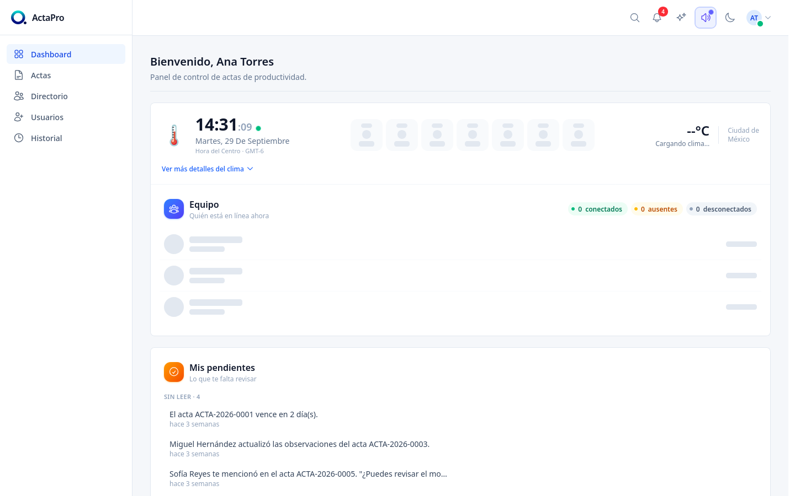
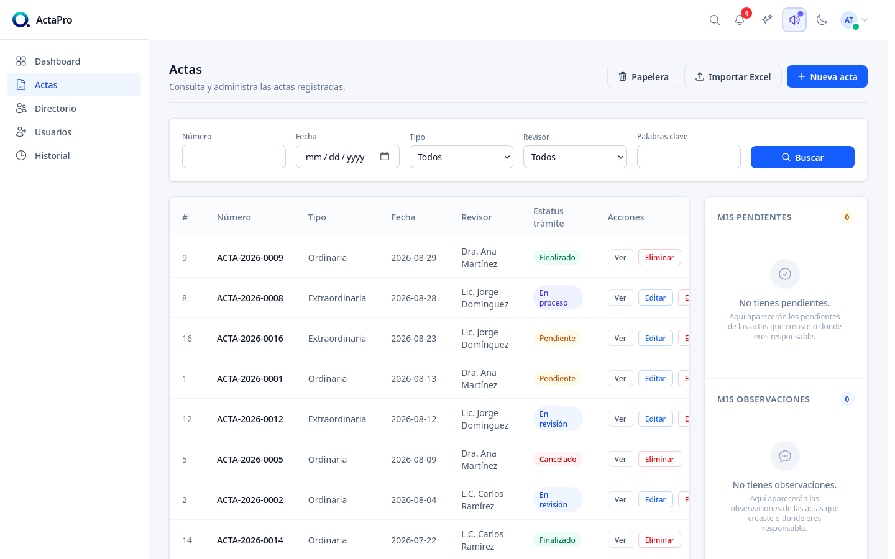
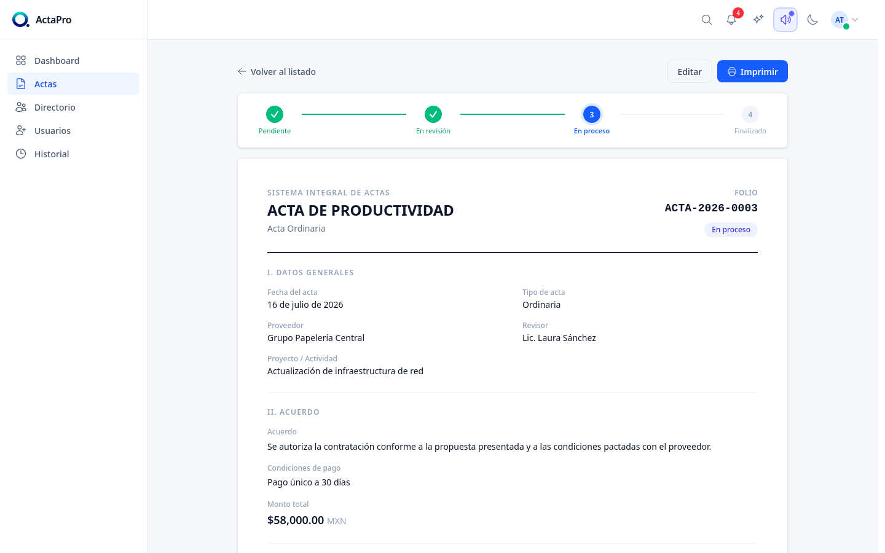

Captura, da seguimiento y audita las actas administrativas de tu organización desde un solo panel en la nube, con reportes e historial inmutable en tiempo real.
De la captura inicial al cierre del expediente, con historial completo y transparente de cada cambio.
Registra actas ordinarias y extraordinarias con folio único, montos, checklist de expediente y evidencias adjuntas en segundos.
Cada acta lleva su propio checklist de pendientes por resolver, asegurando que ningún detalle quede sin atender entre revisiones.
KPIs, métricas financieras y estatus por revisor o departamento con gráficas dinámicas ordenables y exportables.
Capturistas, revisores y administradores: cada perfil con accesos granulares y control riguroso de privilegios.
Capturas reales de ActaPro en producción: experiencia corporativa de alto rendimiento para el control de acuerdos y trámites.

Monitoreo de asistencia de ediles, semáforo de acuerdos vencidos y agenda de sesiones en tiempo real.

Localización instantánea por número de folio, fecha, revisor asignado y estatus de trámite con exportación a Excel.

Trazabilidad completa con estatus de revisión por etapas, condiciones de pago, acuerdos formales e impresión oficial.
Del piloto por departamento a la infraestructura en nube dedicada o servidor propio.
Prueba ActaPro en un solo departamento sin compromiso.
Sin costo de entrada
Ollintep administra todo el hosting y respaldo; tu equipo solo opera.
+ $8,500 de implementación (pago único) · hasta 10 usuarios
Infraestructura privada y aislada para organizaciones de alta demanda.
+ $25,000 aprovisionamiento · usuarios ilimitados
Instalación local On-Premise en los servidores de tu institución.
Hasta 15 usuarios · soporte anual opcional
ActaPro surge de sistematizar el proceso real de secretarías, patronatos, comités y asambleas: eliminando las hojas de cálculo vulnerables y carpetas extraviadas.
La plataforma prioriza velocidad, claridad visual y seguridad en cada clic, garantizando validez e integridad de los expedientes generados.
Prueba la plataforma en vivo con uno de nuestros especialistas.
Comunícate por teléfono o correo para coordinar tu demostración: